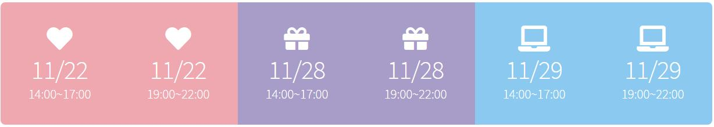
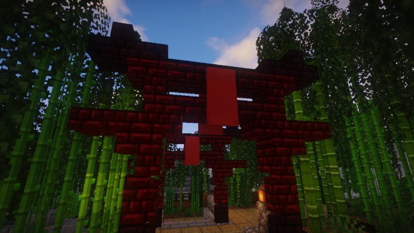

妖姬塔防 Monster Girl TD
前言
妖姬塔防是一款不需要模組就可以在 Minecraft 上遊玩的塔防地圖
玩家可以在充滿江戶風情的環境裡抵禦一波接著一波的敵人
同時還可以體驗到如同RPG一般的劇情
體驗活動開放時段
封測玩家可於開放時段，至夢想之都工作室 Discord 群組
向當天工作人員確認後，遵照工作人員的指示開始體驗本次妖姬塔防活動地圖
每次體驗時間將會於10-20分鐘左右，採取臨場報名參加

五週年活動預告
剪輯：三K | 音樂製作：D4J | 特別感謝：海倫【為所欲為】
11/22、11/28、11/29，我們期待在活動與你相見！
